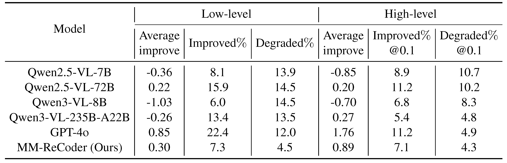
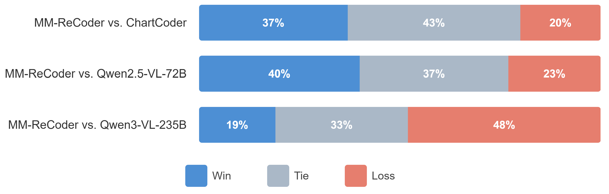

Experiments
Main Results
We evaluate MM-ReCoder on three benchmarks: ChartMimic, Plot2Code, and ChartX. Compared to its base model (Qwen2.5-VL-7B), MM-ReCoder improves execution rate by +22%, low-level score by +27%, and high-level score by +24%. Moreover, MM-ReCoder not only significantly outperforms chart-domain specialist models and models of comparable size, but also achieves the best ChartMimic low-level score and Plot2Code text-match score among all models, surpassing GPT-4o and Qwen3-VL-235B-A22B.

Self-Correction Analysis
When evaluating only on charts that successfully render in both turns, MM-ReCoder achieves a +0.30% low-level score improvement and +0.89% high-level score improvement. In contrast, existing models, especially models of comparable size, show negative improvement in this setting.

Human Evaluation
In A/B testing, MM-ReCoder wins against ChartCoder (37% Win / 43% Tie / 20% Loss) and Qwen2.5-VL-72B (40% Win / 37% Tie / 23% Loss). Among samples with score improvements, 76.5% show visually discernible improvements as judged by humans.
